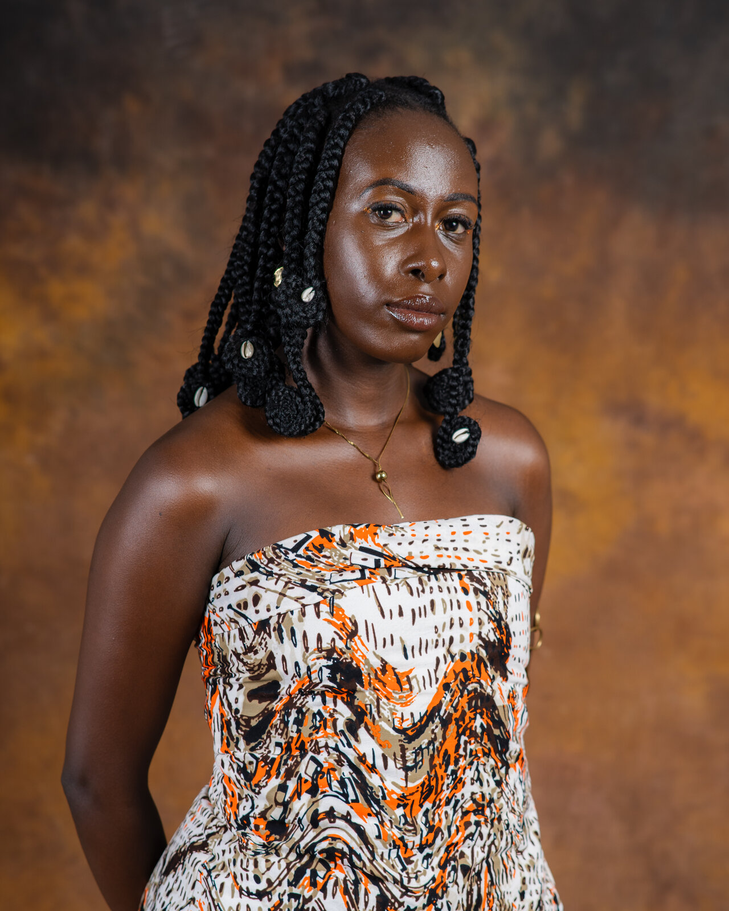

Understanding African Hair Texture
African hair is uniquely beautiful and diverse. Learning how it grows, coils and responds to care is the first step to treating it with the respect it deserves.
Learn & Explore
A living space for African hair knowledge, hairstyles, traditions and stories.
Educational stories and guides rooted in African hair knowledge, tradition and identity.
African hair is uniquely beautiful and diverse. Learning how it grows, coils and responds to care is the first step to treating it with the respect it deserves.

Healthy hair begins at the scalp. Simple, consistent moisture and gentle scalp care make a lasting difference for textured hair.

Protective styles are more than a trend. They are a practical and beautiful way to care for African hair while honouring cultural traditions.

From classic cornrows to contemporary takes on ancient styles, African hairstyles continue to evolve while staying rooted in heritage.

Our hair is never just hair. It carries memory, culture, resistance, beauty and belonging.

The story of how two sisters turned a shared love of African hair into a brand built on identity, care and heritage.